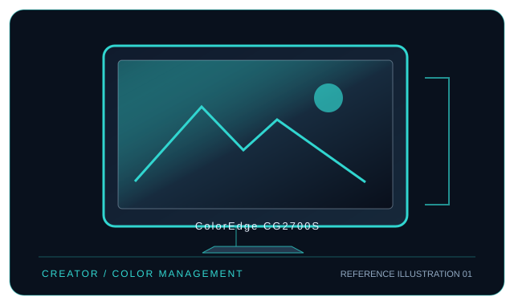

[ INDIVIDUAL COMPONENT // DISPLAYS ]
EIZO ColorEdge CG2700S
27-inch WQHD color-management LCD with an integrated calibration sensor and 92 W USB-C host power.

IDENTIFICATION: EIZO model ColorEdge CG2700S. Confirm the full rear-label model, region and hardware revision; published capabilities can differ by firmware, input board and bundle.
Specifications
| Catalog subcategory | Professional displays |
|---|---|
| Exact model / panel | 27.0-inch IPS LCD, wide-gamut LED backlight |
| Native resolution | 2560 × 1440 (WQHD, 16:9) |
| Refresh rate | Up to 60 Hz at native resolution |
| Color gamut | 99% Adobe RGB and 98% DCI-P3 (manufacturer stated) |
| Calibration features | Built-in swing-out calibration sensor; scheduled self-calibration and ColorNavigator 7; 16-bit LUT workflow and Digital Uniformity Equalizer. |
| Inputs / companion ports | USB-C (DisplayPort Alt Mode), DisplayPort, HDMI; USB hub and RJ-45 LAN. USB-C video needs a DP Alt Mode host; Ethernet is passed through over the host USB data link. |
| VESA / mounting | 100 × 100 mm VESA mount; confirm mounting hardware and load rating. |
| Power | AC 100–240 V; maximum power consumption 187 W, including USB-C power-delivery load; USB-C supplies up to 92 W to a connected host. Actual draw varies with brightness, connected peripherals and charging load. |
Compatibility and deployment
Connect a graphics source through DisplayPort, HDMI, or USB-C DisplayPort Alt Mode. The native 2560 × 1440 timing is 60 Hz; USB-C 92 W charging is a monitor output and does not replace a higher-wattage workstation adapter where required. ColorNavigator is available for supported operating systems; use the matching regional manual.
Preservation notes
Record the complete rear-label SKU, serial/date code, installed firmware and options, calibration report, supported signal timing, tested source and cable, mounting hardware, regional AC rating and image condition. Keep the original hood/stand and model-specific setup documentation with the display; use trained service personnel for internal work.
Manufacturer documentation and references
- EIZO — ColorEdge CG2700S product informationManufacturer product or specification reference for model identification and published capabilities.
- EIZO — CG2700S product brochure (PDF)Manufacturer product brochure with model-specific technical information.